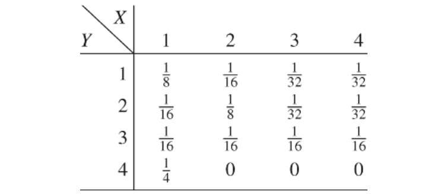

联合熵和条件熵
2.1节中，我们定义了单个变量的熵。现在，扩展到一对随机变量的定义。该定义中没有什么真正新的东西，因为\(X,Y\)可以认为时单个向量值随机变量。
定义 具有联合分布\(p(x,y)\)的一对离散随机变量\((X,Y)\)的联合熵\(H(X,Y)\)定义为 \[H(X,Y) = \sum_{x\in\mathcal{X}}\sum_{y\in\mathcal{Y}}\ p(x,y)\ \text{log}\ p(x,y), \tag{2.8}\]
也可以表示为
\[H(X,Y) = -E\ \text{log}\ p(X,Y). \tag{2.9}\]
我们还将给定一个随机变量的条件熵定义为条件分布的熵的期望值，对条件随机变量取平均值。
定义 若\((X,Y) \sim p(x,y)\)，条件熵 \(H(Y|X)\)定义为 \begin{align} H(Y|X) &= \sum_{x\in\mathcal{X}}p(x)H(Y|X\ =\ x) \tag{2.10}\\ &= -\sum_{x\in\mathcal{X}}p(x)\sum_{y\in\mathcal{Y}}p(y|x)\ \text{log}\ p(y|x) \tag{2.11}\\ &= -\sum_{x\in\mathcal{X}}\sum_{y\in\mathcal{Y}}p(x,y)\ \text{log}\ p(y|x)\tag{2.12}\\ &= -E\ \text{log}\ p(Y|X). \tag{2.13} \end{align}
联合熵和条件熵定义的自然性体现在：一对随机变量的熵等于其中一个变量的熵加上另一个变量的条件熵。这在以下定理中得到证明。
定理 2.2.1 （链式法则） \[H(X,Y) = H(X) + H(Y|X).\tag{2.14}\]
证明 \begin{align} H(X,Y) &= -\sum_{x\in\mathcal{X}}\sum_{y\in\mathcal{Y}}p(x,y)\text{log}p(x,y)\tag{2.15}\\ &= -\sum_{x\in\mathcal{X}}\sum_{y\in\mathcal{Y}}p(x,y)\text{log}p(x)p(y|x)\tag{2.16}\\ &= -\sum_{x\in\mathcal{X}}\sum_{y\in\mathcal{Y}}p(x,y)\text{log}p(x) -\sum_{x\in\mathcal{X}}\sum_{y\in\mathcal{Y}}p(x,y)\text{log}p(x|y)\tag{2.17}\\ &= -\sum_{x\in\mathcal{X}}p(x)\text{log}p(x) -\sum_{x\in\mathcal{X}}\sum_{y\in\mathcal{Y}}p(x,y)\text{log}p(x|y)\tag{2.18}\\ &= H(X) + H(Y|X). \tag{2.19} \end{align}
等价地，我们可以写为
\[\text{log}\ p(X,Y) = \text{log}\ p(X) + \text{log}\ p(Y|X)\tag{2.20}\]
并取方程两边的期望值，得到定理。
推论 \[H(X,Y|Z) = H(X|Z) + H(Y|X, Z). \tag{2.21}\]
证明： 证明与定理遵循相同的思路。
示例 2.2.1 设\((X,Y)\)具有如下联合分布：

X的边缘分布是\((\frac{1}{2}, \frac{1}{4}, \frac{1}{8}, \frac{1}{8})\)，且Y的边缘分布为\((\frac{1}{4}, \frac{1}{4}, \frac{1}{4}, \frac{1}{4})\)，以及，\(H(X) =\frac{7}{4} bits\)，\(H(Y) = 2\ bits\)。而且，
\begin{align} H(X|Y) &= \sum_{i=1}^4 p(Y\ =\ i) H(X| Y\ =\ i) \tag{2.22}\\ &= \frac{1}{4}H(\frac{1}{2}, \frac{1}{4}, \frac{1}{8}, \frac{1}{8}) + \frac{1}{4}H(\frac{1}{4}, \frac{1}{2}, \frac{1}{8}, \frac{1}{8}) \\ &\quad+\frac{1}{4}H(\frac{1}{4}, \frac{1}{4}, \frac{1}{4}, \frac{1}{4}) + \frac{1}{4}H(1,0,0,0)\tag{2.23}\\ &= \frac{1}{4} \times \frac{7}{4} + \frac{1}{4} \times \frac{7}{4} + \frac{1}{4} \times 2 + \frac{1}{4} \times 0\tag{2.24}\\ &= \frac{11}{8}\ bits.\tag{2.25} \end{align}
类似地，\(H(Y|X) = \frac{13}{8}\ bits\)， 以及 \(H(X,Y) = \frac{27}{8}\ bits\)。
注 请注意\(H(Y|X) \ne H(X|Y)\)。然而，\(H(X) - H(X|Y) = H(Y) - H(Y|X)\)，稍后我们利用该性质。